Bất Thường Bóng Tim
I. Giải phẫu
1. Giải phẫu x-quang
– Tư thế chụp thẳng sau trước (PA): Trên phim chỉ thấy bờ ngoài bóng tim, không phân biệt trực tiếp từng buồng tim:
+ Tâm nhĩ trái (Left atrium) nằm chủ yếu ở phía sau, nhận máu từ các tĩnh mạch phổi đi vào gần như theo phương ngang.
+ Tiểu nhĩ trái đôi khi tạo đoạn lồi nhỏ ngay dưới thân động mạch phổi, rõ hơn trên phim nghiêng.
+ Giãn nhĩ trái có thể làm lồi bờ tim trên-phải và mở rộng góc carina do hai phế quản chính tách xa nhau.
+ Tâm nhĩ phải (Right atrium) nhận máu từ tĩnh mạch chủ trên và tĩnh mạch chủ dưới, tạo phần lớn bờ tim phải.
+ Giãn nhĩ phải làm bờ tim phải lồi và dịch ra ngoài.
+ Tâm thất trái (Left ventricle) nằm lệch trái, ở phía sau tâm thất phải, tạo phần dưới bờ tim trái và mỏm tim.
+ Giãn thất trái làm bờ tim trái lồi, mỏm tim thường lệch xuống dưới và sang trái.
+ Tâm thất phải (Right ventricle) nằm trước nhất, ngay sau xương ức; trên phim PA thường chồng hình lên bóng tim, không tạo bờ ngoài rõ.
+ Giãn thất phải có thể đẩy bóng tim sang trái; chỉ khi giãn nặng, thất phải mới có thể góp phần tạo bờ tim trái.
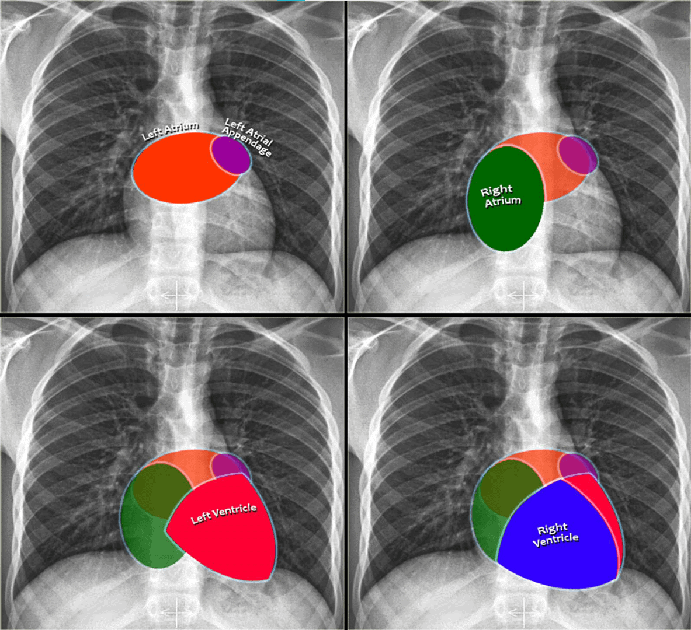
© Chẩn Đoán Hình Ảnh Xray.vn
– Tư thế chụp nghiêng:
+ Tâm nhĩ trái (Left atrium) tạo phần trên của bờ sau tim.
+ Giãn nhĩ trái làm lồi phần trên của bờ sau tim.
+ Tâm thất trái (Left ventricle) tạo phần dưới của bờ sau tim.
+ Giãn thất trái làm lồi phần dưới của bờ sau tim và đẩy bờ sau tim ra sau.
+ Tâm thất phải (Right ventricle) nằm ngay sau xương ức; phần thấp của khoảng sáng sau xương ức được giới hạn bởi mặt trước thất phải.
+ Giãn thất phải làm mất dần khoảng sáng sau xương ức, thường từ dưới lên khi thất phải lớn dần.

* Tư thế thẳng


* Tư thế nghiêng


2. Giải phẫu CLVT


II. Chẩn đoán hình ảnh
1. Bóng tim to
* Nguyên nhân
– Tăng gánh áp lực hoặc thể tích: tăng huyết áp, bệnh van tim, tăng áp động mạch phổi và bệnh tim bẩm sinh.
– Bệnh cơ tim và bệnh tim thiếu máu cục bộ.
– Suy tim mạn.
– Tràn dịch màng ngoài tim có thể làm bóng tim to mà không gây giãn buồng tim.
* Đặc điểm hình ảnh
– Chỉ số tim-ngực (Cardiothoracic ratio, CTR): Tỷ số giữa đường kính ngang lớn nhất của bóng tim và đường kính trong ngang lớn nhất của lồng ngực:
+ Ở người lớn, CTR > 0,5 trên phim PA thẳng đứng gợi ý bóng tim to nhưng không xác định nguyên nhân hoặc buồng tim giãn.
+ Ở trẻ sơ sinh, CTR có thể đến khoảng 0,6 trên phim AP mà chưa đủ kết luận tim to; cần diễn giải theo tuổi và tư thế chụp.
+ Ở trẻ lớn, CTR thay đổi theo tuổi; không áp dụng ngưỡng 0,5 chung cho mọi lứa tuổi.
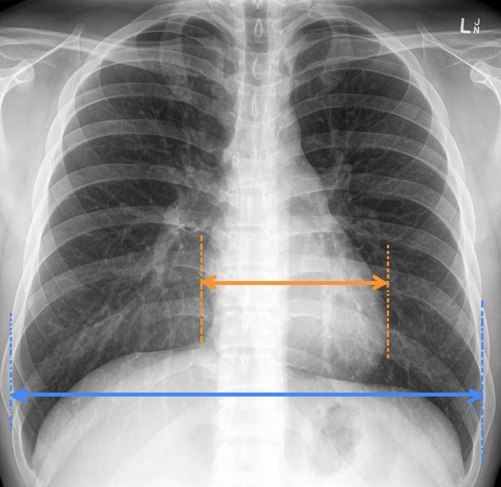
=> Case lâm sàng 1:


=> Case lâm sàng 2:
=> Case lâm sàng 3:


– Không chính xác khi:
+ Bóng tuyến ức chồng lên bóng tim, nhất là ở trẻ nhỏ, làm bờ tim khó phân định và có thể giả tăng kích thước bóng tim.
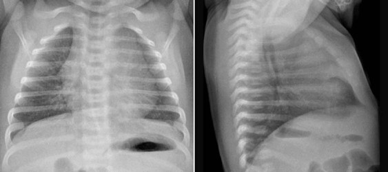
+ Lồng ngực biến dạng hoặc xoay người làm sai lệch đường kính trong ngang. Trong bệnh phổi tắc nghẽn mạn tính, tim có thể nằm dọc nên CTR thấp dù buồng tim giãn; chỉ số này đo bề ngang, không phản ánh chiều trước-sau và chiều cao của tim.
+ Hít vào kém làm giảm đường kính trong lồng ngực và có thể làm CTR tăng giả.
+ Chụp tư thế AP hoặc chụp nằm làm phóng đại bóng tim; không áp dụng trực tiếp ngưỡng CTR dành cho phim PA.
+ Khi thất trái giãn, mỏm tim thường lệch xuống dưới và sang trái; đo đến điểm ngoài cùng thực sự của bóng tim, không mặc định mỏm tim là điểm ngang xa nhất.

2. Bóng tim nhỏ
– Giảm thể tích tuần hoàn:
+ Mất nước nặng, xuất huyết hoặc sốc giảm thể tích làm giảm hồi lưu tĩnh mạch và độ đổ đầy các buồng tim, có thể khiến bóng tim nhỏ.
+ Dấu hiệu này không đặc hiệu; cần đối chiếu với tình trạng huyết động và các dấu hiệu khác trên phim.
– Khí phế thũng:
+ Tăng khí phổi làm cơ hoành hạ thấp, tim xoay dọc và hẹp đường kính ngang bóng tim.
+ Bóng tim nhỏ trong trường hợp này chủ yếu do thay đổi cấu hình trên phim, không đồng nghĩa các buồng tim thực sự giảm thể tích.
– Cạm bẫy: Trong bệnh tim-phổi mạn do tăng áp phổi, thất phải vẫn có thể giãn dù bóng tim hẹp ngang do khí phế thũng; bóng tim nhỏ không loại trừ giãn buồng tim phải.
3. Giãn nhĩ trái
* Nguyên nhân
– Bệnh van hai lá:
+ Hẹp van hai lá cản trở dòng máu từ nhĩ trái xuống thất trái, làm tăng áp lực nhĩ trái và gây giãn nhĩ trái.
+ Hở van hai lá gây trào ngược máu vào nhĩ trái trong thì tâm thu, làm tăng thể tích và gây giãn nhĩ trái.
– Rối loạn chức năng thất trái hoặc suy tim trái làm tăng áp lực đổ đầy thất trái, truyền ngược lên nhĩ trái; thường gặp trong tăng huyết áp, bệnh tim thiếu máu cục bộ và bệnh cơ tim.
– Luồng thông trái-phải lớn, như thông liên thất hoặc còn ống động mạch, làm tăng lưu lượng máu qua phổi và hồi lưu tĩnh mạch phổi, gây tăng thể tích nhĩ trái.
* Hình ảnh tim phổi thẳng
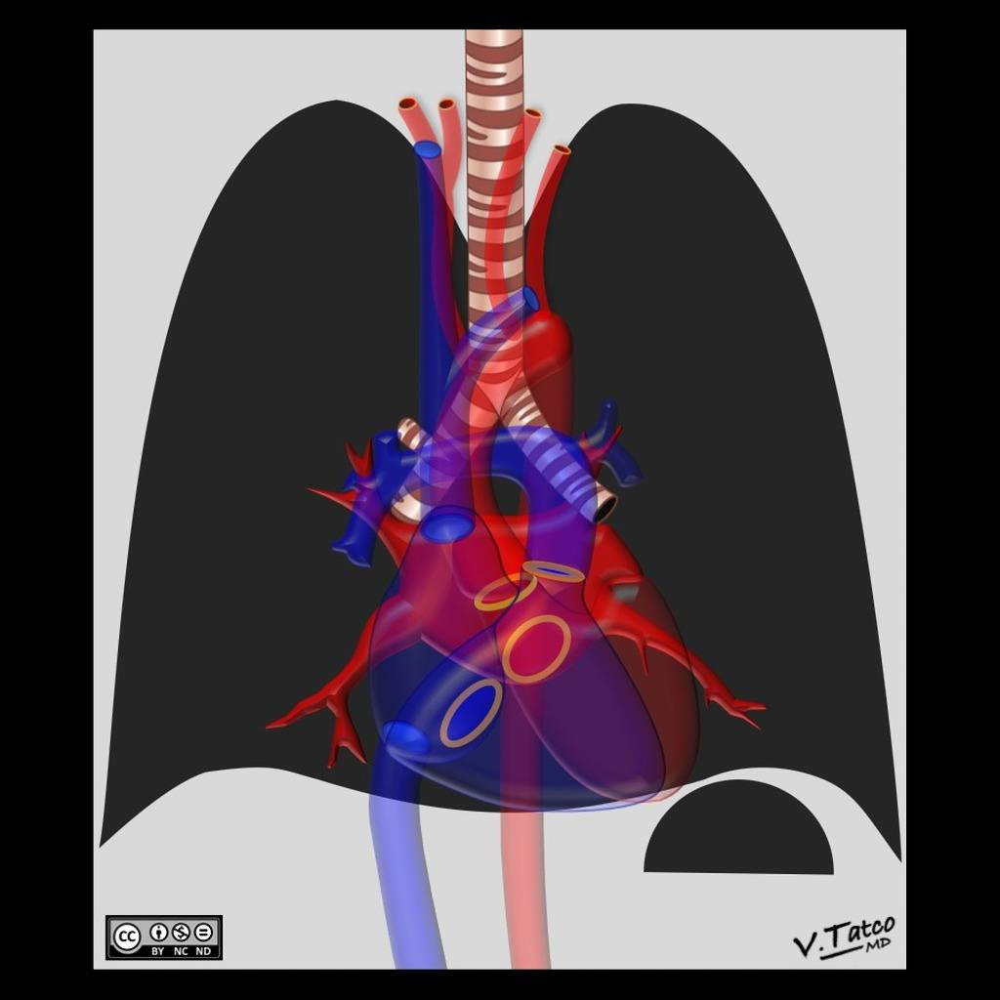
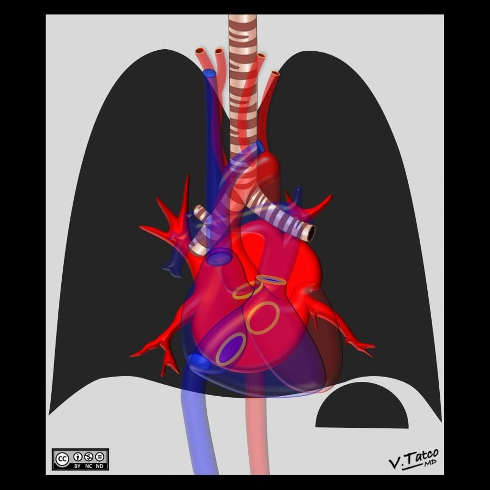
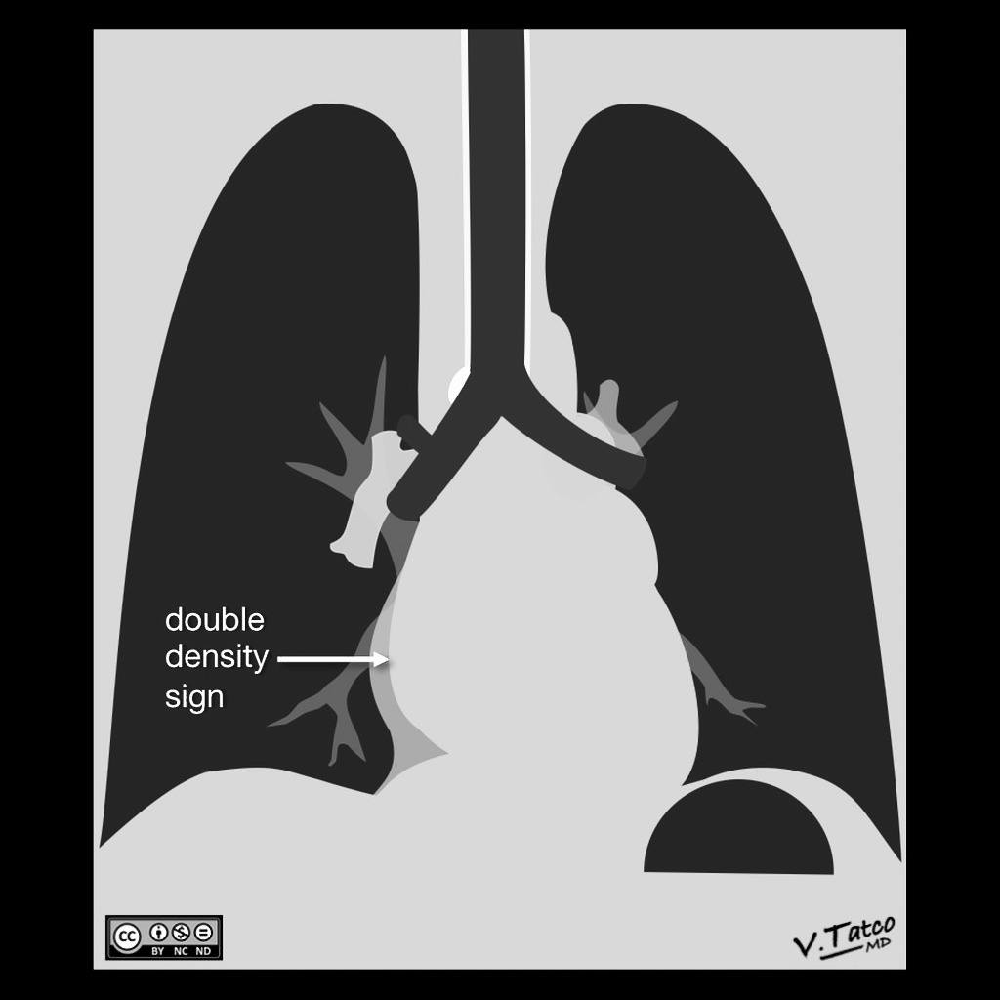
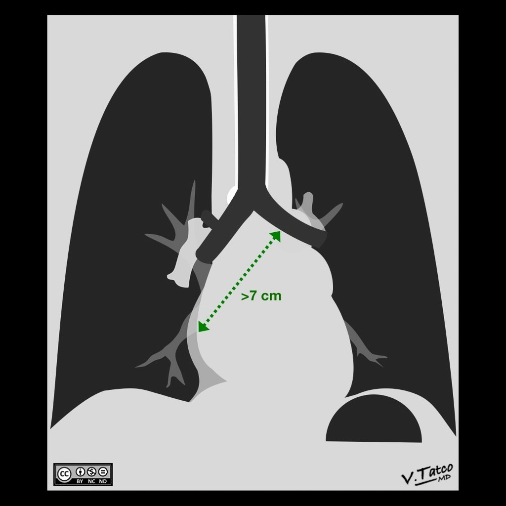
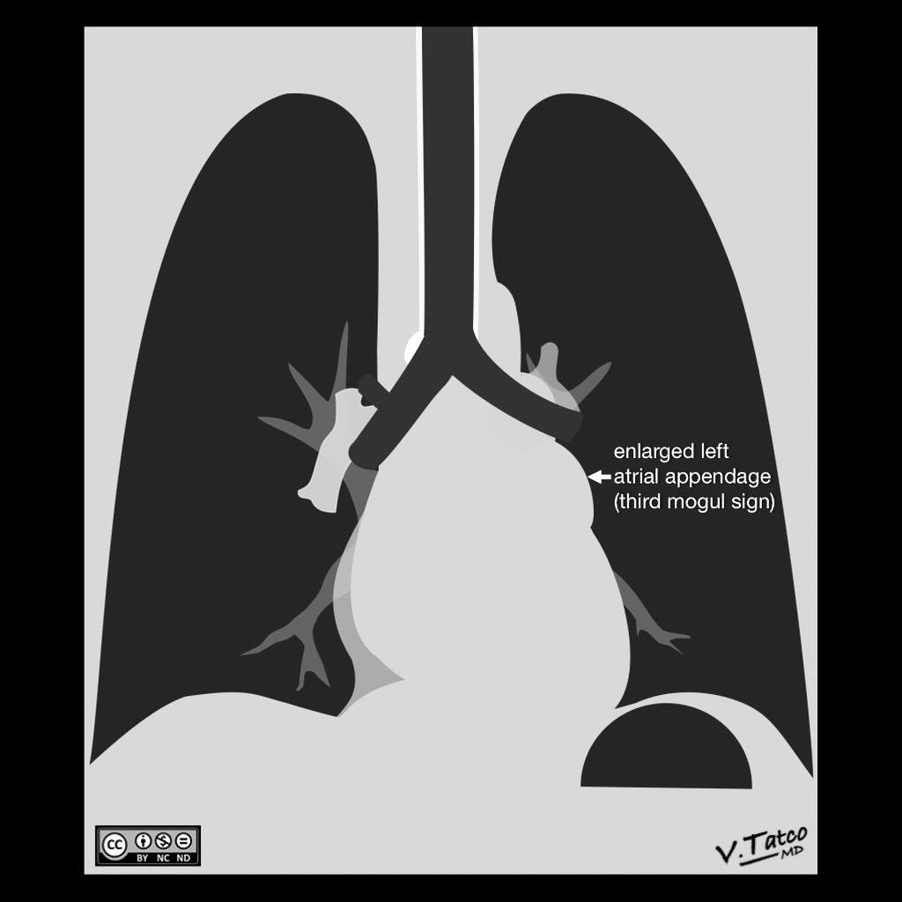
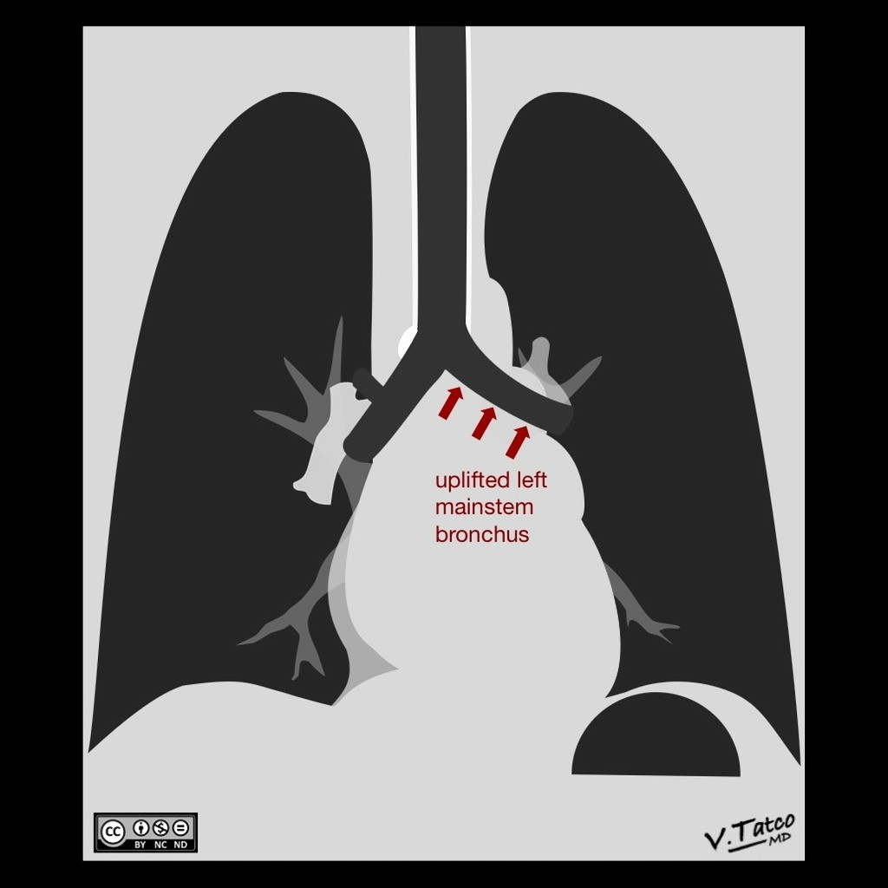
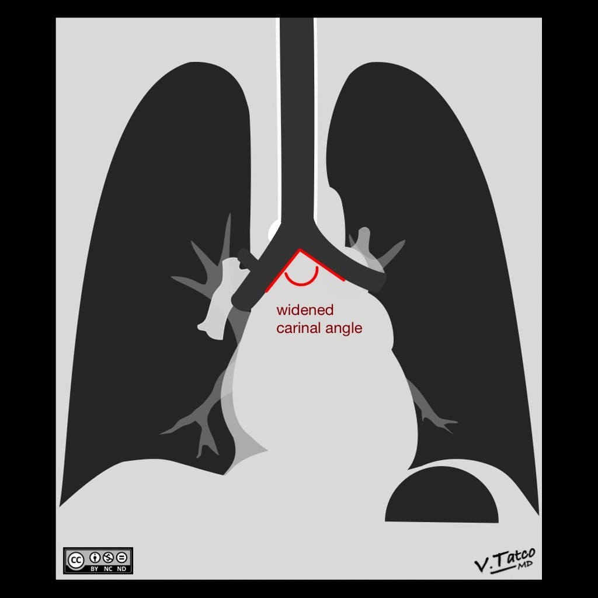
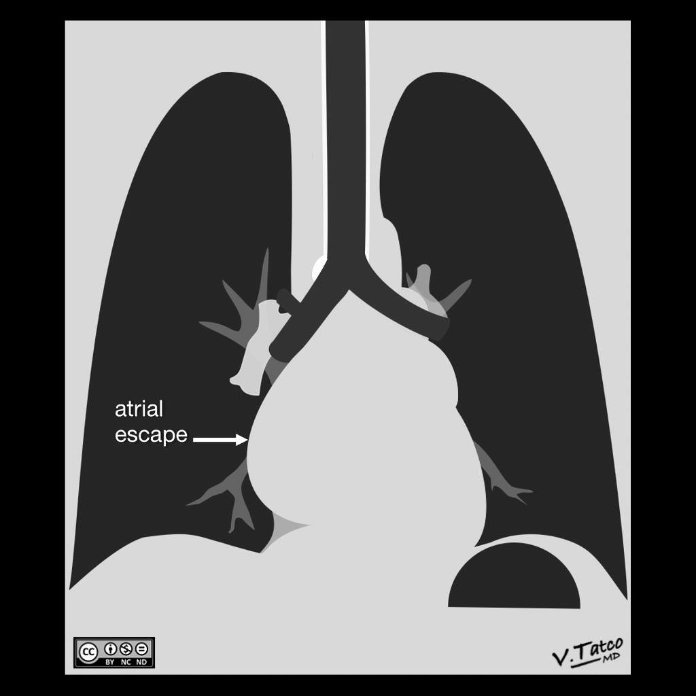
– Dấu hiệu hai bờ tim phải (Double density sign):
+ Nhĩ trái nằm sau nhĩ phải; khi nhĩ trái giãn, bờ phải của nhĩ trái hiện thành đường bờ thứ hai ở phía trong bờ tim phải do nhĩ phải tạo.
+ Theo mức độ giãn, bờ nhĩ trái có thể nằm trong bờ nhĩ phải, hai đường bờ có thể giao nhau, rồi bờ nhĩ trái có thể nằm ngoài bờ nhĩ phải.
+ Giãn nhĩ phải đơn thuần thường làm bờ tim phải lồi và dịch ra ngoài, không tạo đường bờ thứ hai ở phía trong.
+ Dấu hiệu gợi ý giãn nhĩ trái nhưng không định lượng chính xác kích thước nhĩ; cần siêu âm tim khi cần đánh giá kích thước buồng tim.


– Dấu hiệu cung thứ ba (third mogul sign): Cung lồi thứ ba ở bờ tim trái, giữa cung động mạch phổi và cung thất trái, thường do tiểu nhĩ trái giãn:
+ Bình thường, đoạn bờ ngay dưới cung động mạch phổi phẳng hoặc lõm nhẹ, không tạo cung lồi riêng.
+ Khi tiểu nhĩ trái giãn, bờ tim lồi ra ngoài tại đoạn này, tạo cung thứ ba.
+ Dấu hiệu gợi ý giãn tiểu nhĩ trái nhưng không xác định chính xác kích thước nhĩ trái.
– Cạm bẫy: Các cấu trúc khác cũng có thể tạo cung lồi ở bờ tim trái:
+ Phình hoặc giãn động mạch vành có thể tạo khối lồi khu trú; CT mạch vành giúp xác định khối liên tục với động mạch.
+ U trung thất tiếp giáp có thể chồng lên bờ tim; CT giúp xác định nguồn gốc khối.
+ Phình thất trái thường làm lồi đoạn bờ tim thấp gần mỏm; nang màng ngoài tim thường nằm ở góc tâm-hoành, khác vị trí cung thứ ba. Siêu âm tim hoặc CT giúp xác định vị trí và nguồn gốc.


– Khoảng cách từ bờ phải nhĩ trái đến trung điểm phế quản chính trái > 7 cm gợi ý giãn nhĩ trái trên phim PA; chỉ đo được khi nhận diện rõ cả hai mốc.
– Phế quản chính trái bị đẩy lên cao khi nhĩ trái giãn.
– Góc carina:
+ Bình thường, góc thường < 70°; giãn nhĩ trái có thể làm tách hai phế quản chính, với góc > 90° gợi ý giãn nhĩ trái.
+ Góc rộng không đặc hiệu; cần kết hợp với các dấu hiệu khác và chất lượng, tư thế chụp.
=> Case lâm sàng 1:


* Hình ảnh tim phổi nghiêng


– Mất khoảng sáng sau tim:
+ Giãn nhĩ trái làm lồi phần trên của bờ sau tim ra sau, che lấp phần trên khoảng sáng sau tim.
+ Dấu hiệu này không đặc hiệu: giãn thất trái thường làm lồi phần dưới bờ sau tim, còn đám mờ phổi sau tim có thể che lấp khoảng sáng mà không làm bờ tim lồi ra sau.
– Dấu hiệu người đi bộ (Walking man sign): Giãn nhĩ trái đẩy phế quản chính trái ra sau trên phim nghiêng, làm giảm chồng lấp với phế quản chính phải và tạo hình ảnh hai phế quản như chữ V ngược.
=> Case lâm sàng 1:


– Chụp thực quản cản quang:
+ Giãn nhĩ trái lớn có thể đè ép thực quản từ trước ra sau ở đoạn 1/3 giữa, gây hẹp lòng và đẩy thực quản ra sau.
+ Dấu hiệu này hiếm và không đặc hiệu; bất thường mạch máu, phình động mạch chủ hoặc khối trung thất cũng có thể đè ép thực quản. CT giúp xác định cấu trúc gây chèn ép; siêu âm tim đánh giá kích thước nhĩ trái.
=> Case lâm sàng 1:


4. Giãn nhĩ phải
* Nguyên nhân:
– Bệnh van ba lá:
+ Hẹp van ba lá cản trở dòng máu từ nhĩ phải xuống thất phải, làm tăng áp lực nhĩ phải.
+ Hở van ba lá gây trào ngược máu vào nhĩ phải trong thì tâm thu, làm tăng thể tích nhĩ phải.
– Tăng gánh áp lực thất phải do tăng áp phổi, hẹp van động mạch phổi hoặc bệnh phổi mạn (tim-phổi mạn); khi suy thất phải tiến triển, áp lực nhĩ phải tăng và nhĩ phải có thể giãn.
– Tăng gánh thể tích nhĩ phải do thông liên nhĩ hoặc hồi lưu tĩnh mạch phổi bất thường một phần.
– Dị tật Ebstein làm van ba lá bám thấp, nhĩ hóa một phần thất phải và có thể gây giãn nhĩ phải rõ.
– Bệnh cơ tim giãn có tổn thương tim phải có thể gây giãn nhĩ phải.
* Đặc điểm hình ảnh
– Trên phim PA ở người lớn, đoạn bờ phải lồi do nhĩ phải tạo bình thường chiếm < 50% chiều cao bóng tim-mạch.
– Khoảng cách từ bờ ngoài nhĩ phải đến đường giữa cột sống bình thường < 5,5 cm trên phim PA.
– Các ngưỡng này chỉ có giá trị gợi ý; X-quang có thể khó nhận diện giãn nhĩ phải nhẹ hoặc vừa.


– Giãn nhĩ phải được gợi ý khi đoạn bờ phải lồi do nhĩ phải tạo chiếm > 50% chiều cao toàn bộ bóng tim và khoảng cách từ bờ ngoài nhĩ phải đến đường giữa cột sống > 5,5 cm trên phim PA.


– Dấu hiệu gián tiếp, không đặc hiệu của tăng áp lực tĩnh mạch hệ thống:
+ Gan sung huyết có thể làm to gan và nâng vòm hoành phải; dấu hiệu này không đặc hiệu cho giãn nhĩ phải.
+ Tĩnh mạch chủ trên giãn có thể gặp khi tăng áp lực nhĩ phải hoặc quá tải thể tích; cũng cần nghĩ đến tắc nghẽn tĩnh mạch chủ trên.
+ Đường kính quai tĩnh mạch đơn > 7 mm trên phim ngực tư thế đứng gợi ý tăng áp lực nhĩ phải; > 10 mm bất thường rõ. Trên phim nằm ngửa, đường kính > 15 mm mới được xem là bất thường.
=> Case lâm sàng 1:


=> Case lâm sàng 2:


5. Giãn thất trái
* Nguyên nhân
– Quá tải áp lực do tăng huyết áp hoặc hẹp van động mạch chủ làm tăng hậu tải; kéo dài có thể dẫn đến phì đại, suy chức năng rồi giãn thất trái.
– Quá tải thể tích:
+ Hở van động mạch chủ làm tăng thể tích máu trở về thất trái trong thì tâm trương.
+ Hở van hai lá làm tăng thể tích thất trái do lượng máu phụt ngược vào nhĩ trái trở lại thất trái trong thì tâm trương.
+ Luồng thông trái-phải lớn, như thông liên thất hoặc còn ống động mạch, làm tăng hồi lưu tĩnh mạch phổi và quá tải thể tích thất trái.
– Tổn thương cơ tim do bệnh tim thiếu máu cục bộ, nhồi máu cơ tim hoặc bệnh cơ tim giãn làm giảm co bóp, tái cấu trúc và giãn thất trái.
– Cạm bẫy:
+ Phình thất trái sau nhồi máu cơ tim gây biến dạng khu trú bờ tim, không đồng nghĩa với giãn buồng thất trái lan tỏa.
+ Bệnh cơ tim phì đại chủ yếu gây dày thành thất trái; giãn buồng có thể xuất hiện ở giai đoạn cuối.
* Hình ảnh tư thế thẳng


– Bóng tim to.
– Giãn thất trái làm bờ tim trái lồi xuống dưới và sang trái; mỏm tim có thể trở nên tròn.
– Dấu hiệu Shmoo (Shmoo sign):
+ Thất trái nổi bật, có đường bờ tròn, kèm động mạch chủ giãn, tạo hình dáng giống nhân vật Shmoo trên phim ngực thẳng.
+ Dấu hiệu gợi ý phì đại thất trái; không xác định giai đoạn bệnh hoặc đo trực tiếp độ dày thành thất.

– Khi thất trái giãn rõ, mỏm tim thường dịch xuống dưới và sang trái (ra ngoài).
* Hình ảnh tư thế nghiêng


– Bờ sau thất trái lồi ra sau, làm hẹp hoặc xóa khoảng sáng sau tim.
– Dấu hiệu Hoffman–Rigler trên phim ngực nghiêng:
+ Phép đo A: Tại mức cao hơn 2 cm về phía đầu so với điểm giao nhau của bờ sau thất trái và tĩnh mạch chủ dưới, đo theo phương ngang phần thất trái lấn ra sau bờ sau tĩnh mạch chủ dưới. Khoảng cách > 1,8 cm gợi ý giãn thất trái. Đây là các tiêu chí X-quang cổ điển. Với phép đo A, nghiên cứu đối chiếu siêu âm tim năm 2016 ghi nhận độ nhạy 54,9%, độ đặc hiệu 59,2%; không nên dùng riêng dấu hiệu này để kết luận giãn thất trá
+ Phép đo B: Đo khoảng cách theo chiều dọc từ điểm giao nhau nói trên xuống lá hoành trái. Khoảng cách < 0,75 cm gợi ý giãn thất trái.


6. Giãn thất phải
* Nguyên nhân
– Quá tải áp lực:
+ Tăng áp động mạch phổi, có thể do bệnh phổi mạn hoặc thuyên tắc phổi mạn.
+ Hẹp van động mạch phổi.
– Quá tải thể tích:
+ Thông liên nhĩ.
+ Hở van ba lá hoặc hở van động mạch phổi.
+ Thông liên thất lớn có thể gây quá tải hai thất, nhất là khi đã xuất hiện tăng áp động mạch phổi.
– Bệnh cơ tim giãn có thể gây giãn cả hai thất.
– Cạm bẫy:
+ Tứ chứng Fallot điển hình gây phì đại thất phải do cản trở đường ra thất phải; giãn thất phải có thể gặp tùy tổn thương phối hợp hoặc sau phẫu thuật sửa chữa kèm hở van động mạch phổi.
* Hình ảnh tư thế thẳng


– Bóng tim có thể không to rõ dù thất phải giãn vì thất phải nằm ở phía trước; thay đổi kích thước có thể khó nhận biết trên phim thẳng.
– Giãn thất phải có thể làm tim xoay theo chiều kim đồng hồ, khiến mỏm tim hất lên trên.
– Cung giữa trái có thể mất lõm hoặc lồi khi thân động mạch phổi giãn, thường gặp trong tăng áp động mạch phổi. Tiểu nhĩ trái giãn cũng có thể làm lồi đoạn bờ này, nhưng đó là dấu hiệu của giãn nhĩ trái.
– Tăng áp động mạch phổi có thể làm giãn các động mạch phổi trung tâm và rốn phổi, kèm thu nhỏ nhanh các nhánh ngoại vi. Hẹp van động mạch phổi nặng có thể làm giảm tưới máu phổi ngoại vi; riêng hẹp van có thể gây giãn sau hẹp thân động mạch phổi.
– Dấu hiệu đi kèm:
+ Giãn nhĩ trái có thể phối hợp khi hẹp van hai lá gây tăng áp động mạch phổi; đây không phải dấu hiệu trực tiếp của giãn thất phải.
+ Vòm hoành phải nâng cao có thể gặp khi gan to do sung huyết trong suy tim phải; dấu hiệu này không đặc hiệu.


* Tư thế nghiêng


– Thất phải giãn làm hẹp hoặc xóa khoảng sáng sau xương ức (khoảng sáng trước tim).
– Bờ trước bóng tim tiếp xúc với mặt sau xương ức trên > 1/3 chiều dài xương ức, gợi ý giãn thất phải.

Tài liệu tham khảo
* Heart Size, Overall Configuration, and Specific Chamber Enlargement – Bilgen Coskun, Sergin Akpek, Fikret Dogulu
* Going beyond Cardiomegaly: Evaluation of Cardiac Chamber Enlargement at Non–Electrocardiographically Gated Multidetector CT: Current Techniques, Limitations, and Clinical Implications – Partha Hota , Scott Simpson
* Some Pitfalls in the Evaluation of Cardiac Chamber Enlargement on Chest Roentgenograms – Robert E. Dinsmore, Derek J. Goodman, Charles A. Sanders
* Identifying Cardiac Enlargement on an AP Chest Radiograph – Josi Herren
* Is there any diagnostic value of anteroposterior chest radiography in predicting cardiac chamber enlargement? – Hakan Sahin, Divya N Chowdhry, Andrew Olsen